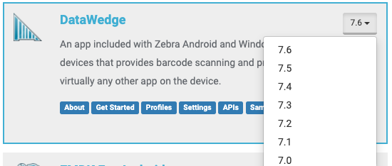

General Guidance and Recommendations
Q: Should I use DataWedge or EMDK for my app?
A: For apps that require barcode scanning, Zebra strongly recommends DataWedge, particularly since it is a simpler approach to app development. DataWedge provides a quick and easy way to add data capture capabilities to an existing app and comes preinstalled on all Zebra devices. DataWedge can be used by configuring the UI without any coding required. Alternatively, all functions can be controlled programmatically through Android intents. See the DataWedge vs. EMDK feature comparison chart and the Get Started guide for more information.
Q: Can I test my scanning app on an emulator?
A: Zebra recommends testing apps on the actual hardware. When this is not possible, adb shell commands can be used to simulate data captured by DataWedge that is sent to the device when scanning barcodes. Refer to this related blog post for more details.
Feature and Compatibility
Q: How can I determine which features are supported with the specific DataWedge version on my device?
A: Once a version is selected from the version selector dropdown in the DataWedge tile from the main TechDocs page, subsequent navigation to related DataWedge pages displays information specific to that version.

DataWedge version selector
The selected version is also reflected in the URL. See Which Version is Installed to check for the DataWedge version running on the device.
Q: Some features are not working as expected. Why?
Check the feature matrix to ensure the proper component versions are in use.
Q: Does DataWedge support NFC?
A: No, NFC is supported with EMDK for Android with Secure NFC or Android’s NFC API.
Configuration and Setup
Q: How do I configure DataWedge to capture data in an app without any coding?
A: DataWedge can be configured through the UI to capture data, process data based on specific requirements, and output data into any associated app or activity with the use of profiles. When DataWedge is invoked to scan and acquire data, the profile which the app is associated to formats or appends the data as specified, and then passes the data to the associated foreground app. Follow the procedure to create a new profile. For more information, refer to the Profiles section and Get Started guide.
Q: How do I mass deploy my DataWedge settings and configurations?
A: Once DataWedge is set up and configured as desired on a device, settings can be saved to a file and distributed to other devices either manually or using a Mobile Device Management (MDM) system. There are two files that can be exported:
- Config – contains DataWedge settings, including all profiles and related configurations, and saves them to ‘datawedge.db’.
- Profile – contains individual profile settings, including how to capture, process, and output data acquired, and sames them to ‘dwprofile_[profileName].db’, where [profileName] is the name of the profile. See Mass Deployment for more information.
DataWedge APIs
Q: How do I integrate scanning within my app?
A: There are two intent-based interfaces into the scanner:
- Using a generic Android intent to acquire scanned data - This eliminates the need to use DataWedge APIs to capture data. Refer to the tutorial which walks through how to receive scanned barcode data into an app.
- Using DataWedge APIs to control the scanner - Provides the ability to programmatically control, modify and query the DataWedge configuration settings and operations through Android intents. This allows new or existing Android apps to be easily modified to acquire data using Zebra devices without concern of the underlying hardware. Refer to Get Started guide and sample demo apps.
See our blog post on how to interface the scanner through DataWedge.
Q: How do I temporarily suspend scanning in my DataWedge app?
A: There are two methods to temporarily disable the barcode scanner in an app using the Scanner Input Plugin:
- Enable / Disable - can be called at any time
- Suspend / Resume - much quicker but can be called only when the scanner is in the
SCANNINGorWAITINGstate. The scanner state can be retrieved using Get Scanner Status or Register for Notification.
For more information and sample code, visit our blog on how to quickly suspend scanning in your app with DataWedge.
Q: Can DataWedge APIs control data capture in real-time?
A: Yes, DataWedge APIs provide dynamic control over data capture whether via scanner, magnetic stripe reader, RFID, serial/USB port, SimulScan, or voice.
Q: How do I use DataWedge Intent API calls for an application after a reboot?
Before executing any DataWedge Intent API calls, such as Set Config or Switch Scanner Params, Zebra recommends to first verify whether DataWedge is enabled using the Get DataWedge Status API. DataWedge must be enabled for these API calls to function properly. This preliminary check ensures that your subsequent API calls are executed successfully.
Q: How can scanner configurations be dynamically adjusted to suit business needs?
To dynamically adjust scanner configurations, use the Switch Scanner Params API to temporarily modify scanner parameters without altering the existing DataWedge profile. This method is particularly beneficial for applications that need to quickly adapt to changing scanning requirements, such as toggling illumination or adjusting scanner settings.
To dynamically change scanner configuration:
Register for Notifications - For instructions, refer to Register for Notifications.
Monitor Scanner Status through Notifications - Before using the Switch Scanner Params API, ensure that the scanner is in an IDLE state by registering for scanner status notifications. Zebra recommends to verify that the scanner status corresponds with the intended profile by checking the PROFILE_NAME extra. Here is a sample code snippet:
case NOTIFICATION_TYPE_SCANNER_STATUS: Log.d(TAG, "SCANNER_STATUS: status: " + b.getString("STATUS") + ", profileName: " + b.getString("PROFILE_NAME")); if (b.getString("STATUS").equals("IDLE") && b.getString("PROFILE_NAME").equals("myprofile")) { //Scanner is enabled for the profile. Do something here. } else { //Ignore the status event }For more information, see the example code for registering notifications.
Switch Scanner Parameters - Once the scanner status is confirmed as IDLE, use the Switch Scanner Params API to adjust scanner parameters. For more information, refer to its documentation.
Q: How can DataWedge Intent API calls be synchronized in a multithreaded environment?
Given the asynchronous nature of intents, it is crucial for developers to synchronize DataWedge intent API calls.
Guidelines for Applications with Multiple Activities or Fragments:
- Register a Broadcast Receiver - In the global context of the application, register a broadcast receiver to handle intents related to DataWedge status, such as API Result Notifications, Profile Switch, Scanner Status, and DataWedge status.
- Spawn a Global Thread or Coroutine - Create a dedicated thread or coroutine in the application’s global context to manage the calling of intent APIs.
- Execute Intent APIs Through the Dedicated Thread - Ensure that all Intent API calls are made through this dedicated thread or coroutine.
Note: The application must manage the results of the intents and its state to determine which APIs to call next.
Sample Code
/* Ensure that your custom application class is declared in the manifest file, for example:
<application
android:name=".MyApp"
... >
...
</application>
*/
/* Global Context: Implementing a custom Application class allows the broadcast receiver to be registered globally, ensuring it remains active as long as the application process is running. This is useful for receiving intents that are relevant across the entire application. */
// Declare the HandlerThread and Handler
private HandlerThread handlerThread;
private Handler handler;
@Override
public void onCreate() {
super.onCreate();
// Initialize the HandlerThread
handlerThread = new HandlerThread("DataWedgeHandlerThread");
handlerThread.start();
handler = new Handler(handlerThread.getLooper());
// Register the BroadcastReceiver
IntentFilter filter = new IntentFilter();
filter.addAction("com.symbol.datawedge.api.NOTIFICATION_ACTION");
registerReceiver(broadcastReceiver, filter, RECEIVER_EXPORTED);
}
// Send the notification to the DataWedge API in a Handler thread
private void sendProfileSwitchNotification() {
handler.post(() -> {
Bundle bundle = new Bundle();
bundle.putString("com.symbol.datawedge.api.APPLICATION_NAME", "com.example.intenttest");
bundle.putString("com.symbol.datawedge.api.NOTIFICATION_TYPE", "PROFILE_SWITCH");
Intent intent = new Intent();
intent.setAction("com.symbol.datawedge.api.ACTION");
intent.putExtra("com.symbol.datawedge.api.REGISTER_FOR_NOTIFICATION", bundle);
sendBroadcast(intent);
});
}
// Initialize the BroadcastReceiver
private BroadcastReceiver broadcastReceiver = new BroadcastReceiver() {
@Override
public void onReceive(Context context, Intent intent) {
if (intent != null && "com.symbol.datawedge.api.NOTIFICATION_ACTION".equals(intent.getAction())) {
handler.post(() -> handleDataWedgeIntent(intent));
}
}
};
private void handleDataWedgeIntent(Intent intent) {
if (intent.hasExtra("com.symbol.datawedge.api.NOTIFICATION")) {
Bundle notificationBundle = intent.getBundleExtra("com.symbol.datawedge.api.NOTIFICATION");
if (notificationBundle != null) {
String notificationType = notificationBundle.getString("NOTIFICATION_TYPE");
if (notificationType != null && notificationType.equals("PROFILE_SWITCH")) {
Log.d(TAG, "PROFILE_SWITCH: profileName: " +
notificationBundle.getString("PROFILE_NAME") + ", profileEnabled: " +
notificationBundle.getBoolean("PROFILE_ENABLED"));
// Handle the profile switch notification data in Main Thread
}
}
}
}
Troubleshooting
Q: Scanning works in DWDemo but not in my own app. Why?
A: By default, the DWDemo profile is built-in to send scanned data via intent to the DWDemo app. A profile would need to be configured for your app to receive the scanned data. Make sure the profile is configured with the appropriate input (e.g. Barcode input) and output (e.g. Intent or Keystroke output). See Managing Profiles on how to accomplish this.
Q: I can scan barcodes but they are not sent to my app. Why?
A: It is likely either a profile is not associated with your app or the profile input/output is not configured properly. DataWedge is using the default profile (Profile0) to perform the scan, which allows the scan beam to appear. However, if improperly configured, it does not know how to output the data captured. Either create a profile and associate it with your app with the appropriate configurations or configure the default profile (Profile0) with the proper input/output to capture the scanned data.
Related Guides: